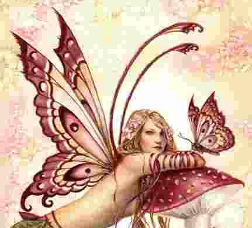

Forums galactiques > Taverne galactique : lieu de discussion informel > Au coffee shop des jours heureux
| Roxy Réputation à la taverne : 67  12/07 ETU 19:52  | Score : 2 Détails Au coffee shop on pouvait, si on avait de la chance, tomber sur un tas d'individue bizar, voir très bizar !
Mais là! tomber sur Monsieur Muffle, recouvert de poussière soit dit en passant, c'était inimaginable ! Roxy entama donc la discution. Monsieur Muffle quelle bonne surprise ! Il faudrait penser à aller voir ce cher Sloopy pour un toilletage intensif. Puis tournant la tête vers la porte de la "Caaaaave", elle continua: De plus je ne savais pas que Marie-Charlotte, dit la cave, dit la bête, vivait encore dans cet endroit. Vous m'en voyait surpris ! Personnellement je tenterais quand même l'expérience, quitte à suivre le même destin que feu RoX (grande commandante soit dit en passant). | ||
| Charlotte Réputation à la taverne : 135  13/07 ETU 12:45 | Score : 4 Détails Charlotte avait sursauté lorsque Mr Muffle était apparu devant elles. Elle avait par la suite distingué les traits du gentil bonhomme. Elle essaya de la contourner, curieuse de voir "La Bête" Prononcez la Baèèèèèèèèèète. Mais à chaque fois Mr Muffle l'empêchait de passer.
- Dites, si vous nous empêchez d'entrer, ce ne serait pas pour garder la réserve pour vous? A moins que vous l'ayez déjà vidée... Des Larmes coulèrent des yeux de Charlotte rien que de penser à une cave vide d'alcools. Elle voulait absolument goûter à ces breuvages, tous aussi différents les uns des autres. | ||
| Roxy Réputation à la taverne : 67 13/07 ETU 18:56 | Score : 1 Détails Roxy, dépitée, se tourna vers Charlotte et lui dit:
Laisse tomber Charlotte, avec la tonne de poussière qu'il a dans les oreilles il ne nous entend même pas ! Puis elle rajouta doucement : Passe moi une sucette, ta barette, un stylo et enfin ... un pétard charger à bloc avec un bricket, s'il te plait. Et là, sous ces yeux ébahit, telle la Macgyver girl, Roxy construisie en un temps record (13min25sec) pas un, mes deux buldozers. Alors touf de poil ? tu nous laisse passer maintenent ? Charlotte défonce la porte on va l'avoir notre divine vinasse ! | ||
| Charlotte Réputation à la taverne : 135 13/07 ETU 19:30 | Score : 2 Détails - Hé dis Roxy, c'est pas un peu dangereux ces pétards? Non pas que je mette en doute ta logique créative, mais ça parait un peu bourrin l'assemblage!
Charlotte recula, pointant l'objets gigantesquement petit en direction de Mr Muffle et essaya tant bien que mal de se boucher les oreilles avec sa main libre. - Ca va faire boum!!! | ||
| Cignia Réputation à la taverne : 125  13/07 ETU 20:09 | Score : 1 Détails Cignia sursauta.
Roxy avait mis la totale pour défoncer la porte qui cachait "le trésor". On pouvait appeler cela comme ça car pour nous rien de tel de voir une réserve remplie d'alcool! De l'alcool,j'ai bien entendu?j'arrive!! Un trou béant avait remplacé la porte et Mr muffle se déboucha enfin les oreilles. Roxy s'avança doucement, cachant sa peur de "la beeete" comme elle pouvait et finalement, Une expression de soulagement apparue sur son visage. Ce qu'elle avait découvert devait être grandiose car ses prirent soudainement une dimension un peu plus grande que la normale. Charlotte s’avança et commença elle a son tour a avoir des yeux exorbitants. Cignia, ne comprenant pas ce qu’il y avait demanda ce qu’il y avait dans cette salle et comme personne ne lui répondait, elle se fraya un passage entre Charlotte et Roxy qui monopolisaient l’espace. Elle comprit alors ce qui avait faillit arracher les yeux au deux autres. | ||
| Charlotte Réputation à la taverne : 135 13/07 ETU 21:05 | Score : 0 Détails [big][b][yellow]- Nooooooooooon![/yellow][/big][/b][yellow] L'explosif a aussi fait sauter une partie de l'arrière réserve.[/yellow]
[i]Charlotte attrapa et secoua Roxy, à cause d'elle la moitié de cette cave à trésors était partie en fumée! Elle aurait au moins pu faire ses explosifs moins puissants... Tant pis! Charlotte pénétra dans le lieu saint, une main levée vers le ciel comme si elle avait été touchée par la grâce divine et marcha sur le vin qui alluait sous ses pieds. Elle souleva un tonneau de vin daté "1772" et le regarda avec un sourir lui arrivant aux oreilles.[/i] [yellow] - Tonneau, en ce jour saint je te baptise Saint Tonneau. Désormais du haut de mes mains tu nous abreuvera![/yellow] | ||
| Retoris Réputation à la taverne : 237  13/07 ETU 21:30 | Score : 1 Détails OUIIII!!!Une nouvelle réserve! On a presque épuisé celle de feu Ju... Merci les filles!
Marcel! Ammène le camion! Un camion arriva d'on ne sait où et se gara devant la réserve. Retoris pris deux tonneau et commenca à charger le camion. Après avoir monté une soixantaine de tonneaux, il remercia chaleuresement les filles et demanda à Marcel de partir à leur cachette. Après que Marcel ait tourné au coin de la rue, Rétoris se trouva seul avec Charlotte, Roxy, Cigna et les 10 malheureux tonneaux qu'il avait laissé. Retoris? Qu'à tu fais de NOTRE réserve?! Bah...héhé...je l'ai emmenée dans un lieu sûr! Héhé... Je vous en ai laissé non? Retoris recula en direction de la sortie. Arrivé à la porte explosée, il commenca à courir. Au pied Réto! Viens ici mon petit! AHHHHHHH!!! Fuyons! Marcel ramène le camion vite! Retoris fut rattrapé par les trois harpies et... Devant la violence des actes effectués, nous ne pouvons les nommer. Merci de votre compréhension. Quand Marcel arriva, il se demanda ce qui c'était passé. Il trouva les trois filles souriantes dans la réserve assise chacune sur un tonneau, Roxy tenait un cendrier dans ces mains. Après avoir déchargé les tonneaux, il demanda où était Retoris. Elles lui expliquèrent que ses membres supérieurs étaient dans le tonneau de Charlotte, que ses membres inférieurs étaient dans celui de Roxy, que son buste était dans celui de Cigna et que ses organes génitaux avaient été brûlés et mits dans ce cendrier. Marcel reparti tout pâle avec les trois tonneaux et le cendrier. | ||
| Cignia Réputation à la taverne : 125 13/07 ETU 22:31 | Score : 2 Détails Ca valait le coup d'y entrer dans cette cachette!^^
Vous ne croyez pas qu'on a été un peu dures avec lui quand même?! | ||
| Roxy Réputation à la taverne : 67 19/07 ETU 00:27 | Score : 2 Détails Si on vous dit que Bephera, Edgar et Roxy se trouvent en même temps au Coffee shop, c'est une blague ne le croyait pas ! C'est juste une rumeur, une boutade, une vulgaire galigeade.
Mais bon, ne rigoler pas trop ... mais pourtant c'est vrai ! Ne prener pas en considération que le fait de trouver ces trois individues chelou dans le même endroit explique beaucoup de chose ! Il suffit juste de considérer le faite que trois personnes est envie de se la coller gentillement entre gentleman et gentlewoman ! voilà tout ! A l'instar de leur pourrir la vie préférés leur souhaite bonne chance dans cette galaxie sans pitié où les alcooliques sont vues comme des personnes à éviter, à se méfier aussi d'aillieur ! Voila l'histoire de trois personne voué à l'échec sentimental ou cuisant ! | ||
| Bephera Réputation à la taverne : 174  19/07 ETU 00:37 | Score : 1 Détails une fois de plus, dame Bephera se retrouvait au coffee.Oui mais voilà, cette fois elle se trouvait en bonne compagnie: Roxy, une de ses plus fervente compère et Edgar....C'était plutôt jah!
Enfin bref, tout cela annonçait une bonne soirée, le tout accompagné de l'alcool perso du Roots et de sa meilleur came. Les trois compères se retrouvaient autour de la table et discutaillaient de tout et de rien, l'alcool coulait gentillement et la soiré allait de bon train. D'un seul coup, Bephera s'exclama: Et si on se faisait un méchant jeu, genre un schlouki, un jeu bien connut par chez moi, ça vous dit? | ||
| Meyen Réputation à la taverne : 515  21/07 ETU 22:20 | Score : 0 Détails YOUUUUPIIIIIIIIIIIIIIIIIIIIIII
A la votre ^^ | ||
| Bephera Réputation à la taverne : 174 15/08 ETU 05:47 | Score : 1 Détails La bephe complètement fracassée, entra au coffee avec deux personnes inconnuent pour l'instant aux coffeee du roots.
Roots, ta meilleur cuvée de progresse s'il te plaît! Bephera se rendit compte que le coffee était maintenant désert. Roots et Roxy ne donnaient aucun signe de vie. Edgar était annoncé mort.... La vie s'était complètement arrêtée...Tous les espoirs de survient ont de plus en plus disparuent... Comment va-t-ont finir? Seul l' avenir nous le dira. | ||
| Leid Milhanah Réputation à la taverne : 620  15/08 ETU 11:03 | Score : 0 Détails Une voix familiére débarqua dans le coffee
HEHOOOOO, c'est pas fini ce bordel, ca y'est je suis parti 15 jours, et les gens vont plus dans ce panthéon, qu'ici! Barman!A boire, et de la white s'il te plait! Bepheranounet, Roxy cherie? vous etes ou??? | ||
| Thomas Réputation à la taverne : 335  17/08 ETU 01:51 | Score : 0 Détails Une silhouette grande et mince entre dans le coffe-shop.
C'est Thomas, le visage clair mais les yeux sombres. Il est vêtu de ses nouveaux vêtements*. Il ne sourit pas, mais on sent émaner de lui une sérénité qui semble presque obscène chez quelqu'un d'à peine 25 ans. On voit que des événements inconnus l'ont changé récemment. Il avance vers un coin obscur de la pièce. S'il veut passer inaperçu, c'est raté: Thomas est pratiquement la blancheur incarnée. On dirait qu'il est entré par hasard, sans buts, à moins qu'il cherche inconsciemment un peu de compagnie. *cf avatar | ||
| Metamorphosis Réputation à la taverne : 658  19/08 ETU 12:44 | Score : 0 Détails
Salut à tous ! Méta s'affala dans un fauteuil et regarda autour d'elle... Oui, elle était en forme ! Oui, elle avait le moral ! Pourtant, ces derniers temps, elle avait beaucoup souffert : la disparition de ses amis, le silence des autres... et la peur au ventre ! Peur de quoi en fait ? Pas de disparaître à son tour... quand ce sera son tour ? Non ! Peur de ce silence soudain dans toutes les salles. Peur de cette résonnance que seules les pièces vides peuvent renvoyer. Peur de la solitude... Alors elle beuglait pour avoir moins peur... comme elle l'avait toujours fait... avec Melpo, avec Munsu, avec Tsuul, avec... M... ! Il ne fallait pas se laisser aller à la peur. Je boirais bien quelque chose moi ! | ||
| Anéria Réputation à la taverne : 0  19/08 ETU 14:05 | Score : 0 Détails Anéria entra dans la taverne qui lui était encore inconnue et dit d'une voix timide :
bonjour tout le monde... elle s'installa au bar et commanda une vodka. | ||
| Metamorphosis Réputation à la taverne : 658 19/08 ETU 16:47 | Score : 0 Détails Méta avait vu l'inconnue entrer et s'installer au comptoir... Elle s'approcha et commanda un grog bien chaud. Peut-être que son estomac allait se calmer et que la peur allait refluer ? Le meilleur remède était d'engager une conversation, aussi anodine soit-elle.
Bonjour Commandante ! N'y a pas grand monde, hein ? Bienvenue chez nous si vous venez de loin... et simplement bonjour si vous êtes d'ici. Mais je ne vous ai jamais croisée ou je m'en souviendrais ! Si vous voulez parler, je suis à votre disposition. Si vous préférez le silence, j'y suis habituée. En attendant la réaction de l'inconnue, Méta se mit à siroter la boisson brûlante. | ||
| Anéria Réputation à la taverne : 0 19/08 ETU 18:56 | Score : 1 Détails Je préfère parler...
Parlez moi un peu de votre galaxie et de vous. | ||
| Metamorphosis Réputation à la taverne : 658 19/08 ETU 19:07 | Score : 0 Détails Ah ! Ma Galaxie.... Vous seriez venue il y a encore quelques mois, je vous aurais présentée à des commandants forts intéressant !!!... Heu... je ne veux pas dire que ceux qui sont là ne sont que des... non ! Seulement, ce n'est plus ce que c'était.
La Galaxie est décadente. Beaucoup de Commandants sont morts ou ont disparu. Des systèmes entiers se retrouvent à l'abandon et les salles de discussion sont vides. Plus de coups de gueule, plus d'éclats de rire, plus d'injures bien senties... même plus de roucoulades ni de niaiseries pour pouffer de rire en se donnant des coups de coude ! Ah si ! Un espoir.... L'Arche ! Voyez-vous, le système zéro de la Galaxie a longtemps été fermé à double tour. Gardé jalousement par les Insurgés... qui c'est ? Vous verrez !... de tout temps convoité, ce système a été le centre de beaucoup de disputes, l'enjeu de beaucoup de batailles et le départ de diverses légendes aussi. Il abrite l'Arche, seul moyen (et rien n'est sûr...) d'échapper à l'Apocalypse. Figurez-vous que le zéro vient de s'ouvrir au monde... Je vais y aller faire un tour ! Si vous voulez, je vous y emmène ? Mais je parle, je parle... et vous ? D'où venez-vous ? Je ne crois pas avoir lu votre histoire... | ||
| Anéria Réputation à la taverne : 0 19/08 ETU 19:39 | Score : 1 Détails une petite virée avec vous ne me déplairait pas ...
Mon histoire ??? Je suis apparue à la tête de ce royaume en ayant aucune idée de ce que je faisai dans cet endroit, la seul chose que je sait c'est que tout ici deviendra rouge ... enfin je le sait mais pourquoi??? pas la moindre idée... |
Forums galactiques > Taverne galactique : lieu de discussion informel > Au coffee shop des jours heureux